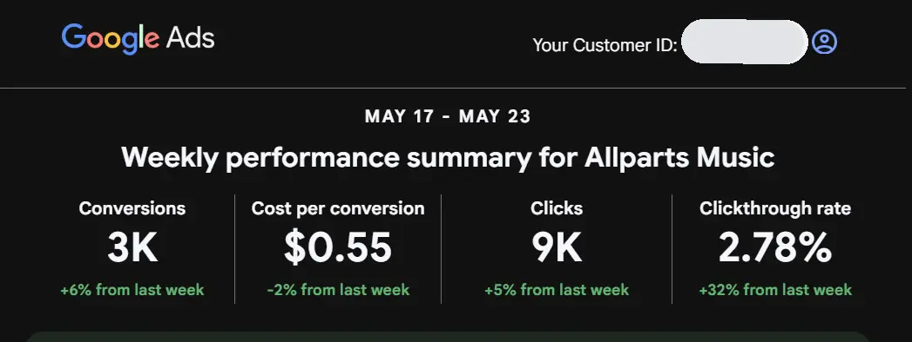
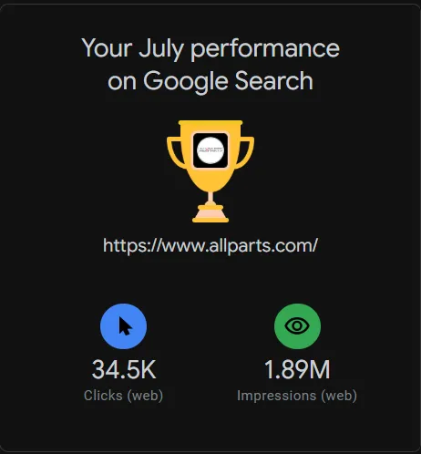
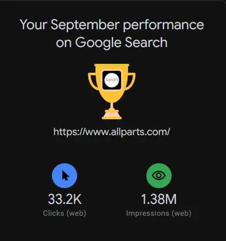
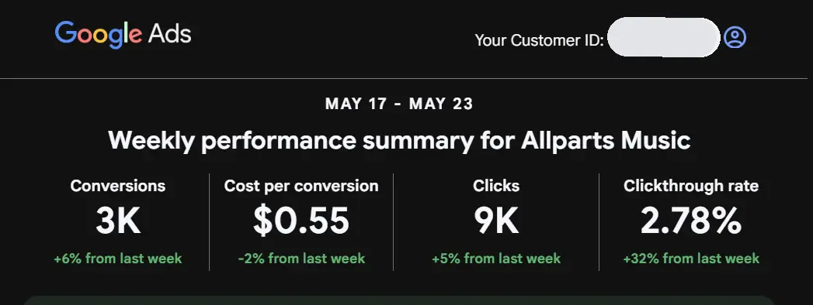
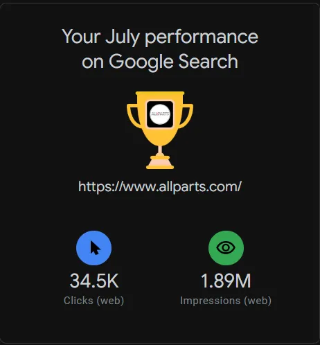
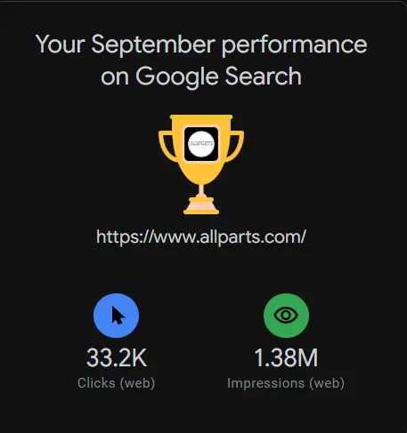
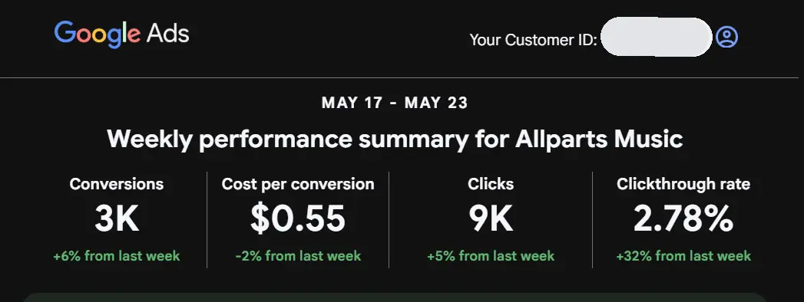
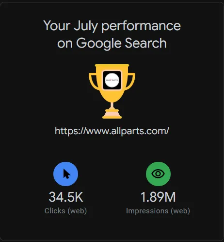
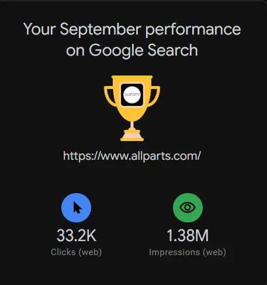

As a marketing professional, I have successfully managed and optimized various marketing campaigns to drive
brand awareness, customer engagement, and revenue growth. My expertise includes digital marketing strategies,
social media management, content creation, email marketing, and data analysis. I have a proven track record of
delivering measurable results through targeted campaigns and innovative marketing techniques.
This page showcases key marketing analytics and performance metrics from the websites, brands, and campaigns I created and managed. It highlights
essential data points such as total page views, unique visitors, traffic sources, engagement times, and impressions, which I use to evaluate audience behavior and guide strategic decision making. Alongside these insights, I
also track the revenue generated from my campaigns, the growth of new users acquired, and the success of my Google Ads and social strategies. By monitoring patterns in user activity, growth over
time, and the effectiveness of different acquisition channels, I’m able to optimize content, improve visibility, and
drive meaningful, revenue-focused results.
To see some examples of my marketing campaigns, banners, and ads, please visit my Marketing Assets page.


